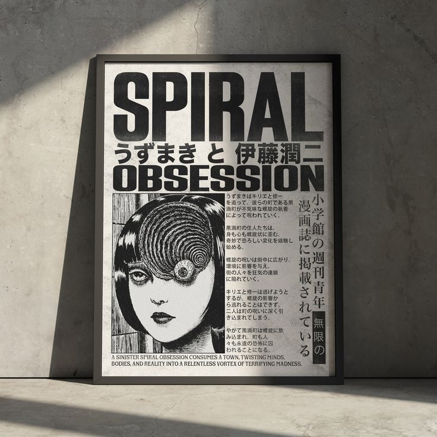
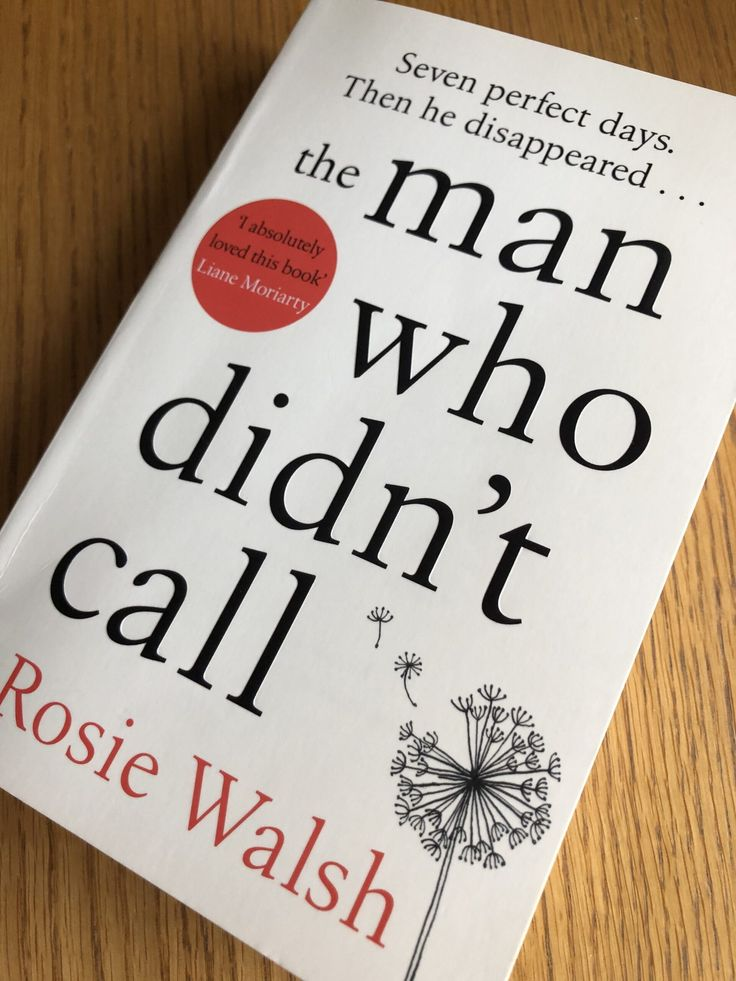
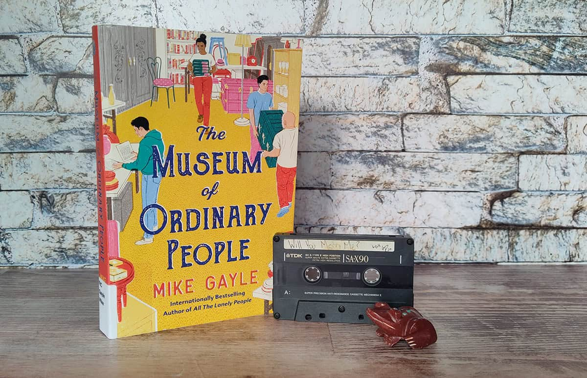

UZUMAKI
Uzumaki by Junji Ito is a horror manga that takes place in the cursed town of Kurouzu-cho, where residents become obsessed with spiral shapes. Kirie Goshima and her boyfriend, Shuichi Saito, witness bizarre and horrifying events as the spiral manifests in everything—from whirlwinds and snail-like transformations to grotesque human contortions. Shuichi's parents fall victim to the curse, his father driven to madness and his mother to paranoia. The town deteriorates into chaos as the spirals intensify, engulfing people and the environment in a terrifying vortex. Despite their efforts to escape, Kirie and Shuichi are ultimately consumed by the spiral’s power.